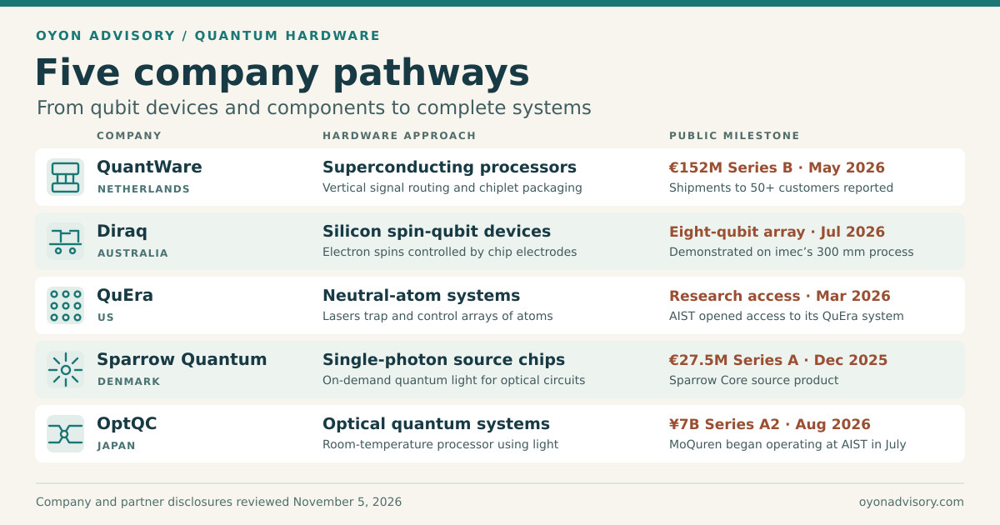

Back to Research & Perspectives
Quantum Computing Hardware — Five Company Pathways
Building a qubit is one challenge. Building a device that can control, connect and read out many qubits is another. Superconducting processors need more signal connections inside a cold package. Silicon spin devices need gate electrodes that reliably control individual electrons. Neutral-atom and photonic systems need precise control of atoms and light. These requirements lead to different device architectures and different paths to scale. [1][2][3]
Five companies illustrate how those engineering challenges are turning into products, manufacturing programs and research deployments.


Where the technologies fit
Two chip designs show how materials influence device performance. In a superconducting transmon, the microwave field extends into thin surface layers. A defect in one of those layers can absorb energy from the qubit and shorten its lifetime. In a silicon spin qubit, electrodes confine an electron just beneath the oxide. A defect that gains or loses charge can shift the local electric potential and change how strongly neighboring spins interact. [4][5][3]
View the superconducting interface and silicon spin gate stack schematics
![Planar transmon top view, capacitor gap cross-section, Josephson junction cross-section and defect energy absorption.]()
![Silicon MOS double-dot cross-section and energy diagrams showing weak exchange at a high barrier and stronger exchange during a barrier pulse.]()
Five companies and their recent milestones
1. QuantWare | Netherlands — Superconducting processors and packaging
QuantWare supplies quantum processors, fabrication services and chiplet packaging. Its vertical interconnect architecture routes signals through the package to ease wiring congestion as processors grow. In May 2026, the company announced a €152 million Series B and reported shipments to more than 50 customers. Its 10,000-qubit architecture is a development target. [6]
2. Diraq | Australia — Silicon spin qubits on a foundry process
Diraq uses the spins of electrons confined by gates on a silicon chip. In July 2026, Diraq and imec reported coherent operation and readout of an eight-qubit array fabricated on imec’s 300 mm CMOS-compatible process. Wafer-wide yield and tuning effort remain open questions. [7]
3. QuEra | US — Neutral-atom systems
QuEra uses lasers to trap neutral atoms in arrays and control their interactions. In March 2026, Japan’s AIST began offering external access to its QuEra system through the ABCI-Q research infrastructure, giving researchers a platform to test workloads on neutral-atom hardware. [8][9]
4. Sparrow Quantum | Denmark — Single-photon source chips
Sparrow Quantum develops chips that emit photons one at a time on demand. For systems that rely on interference between individual photons, the photons need to be sufficiently alike and enough of them must reach the rest of the circuit. The company completed a €27.5 million Series A in December 2025. Its Sparrow Core product specifies source efficiency, photon purity and indistinguishability. [10][11]
5. OptQC | Japan — Room-temperature optical quantum computing
OptQC develops complete optical quantum computers. Its first machine, MoQuren, began operating at AIST in July 2026 as a research and development system. In August 2026, OptQC closed a ¥7 billion Series A2 led by NTT to develop its next processor. [12][13]
What these milestones tell us
A foundry experiment shows that a fabrication process can produce working devices. A research deployment gives users access to hardware. A component shipment shows that a supplier can deliver a product. Each answers a different question about commercialization. [7][9][6]
For hardware suppliers, the next milestone is customer qualification. Can a superconducting package carry more control signals while preserving qubit performance? Can a silicon gate stack deliver consistent spin control across a wafer? Can a photon source retain its brightness and purity after packaging? Customers can specify and run these tests while the wider field works toward useful fault-tolerant computing. [6][5][10][1]
Selected public sources
- DARPA — Quantum Benchmarking Initiative and hardware approaches
- Krantz et al. — A Quantum Engineer’s Guide to Superconducting Qubits
- Industry-compatible silicon spin-qubit unit cells exceeding 99% fidelity — Nature
- Electric-field control of defect loss in superconducting qubits — npj Quantum Information
- Low charge noise quantum dots with industrial CMOS manufacturing — npj Quantum Information
- QuantWare — Series B, customer shipments and VIO architecture; May 2026
- imec and Diraq — Coherent operation of an eight-qubit silicon MOS array; July 2026
- AIST G-QuAT — ABCI-Q system overview
- AIST G-QuAT — External access to superconducting and neutral-atom systems; March 2026
- Sparrow Quantum — Sparrow Core source specifications
- Sparrow Quantum — €27.5 million Series A; December 2025
- AIST and OptQC — Initial operations of MoQuren; July 2026
- OptQC — ¥7 billion Series A2; August 2026